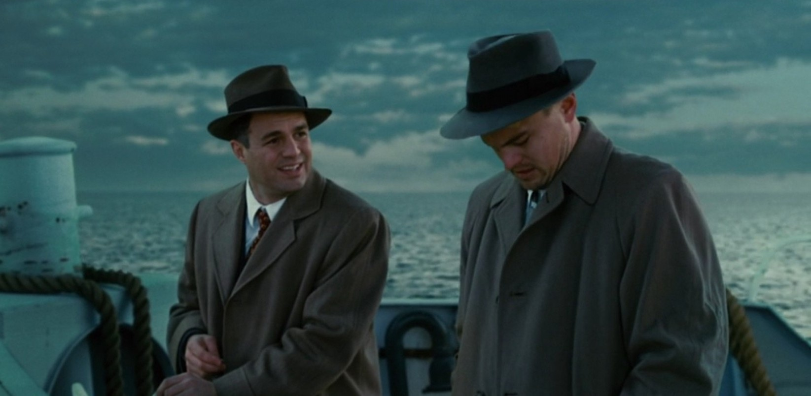
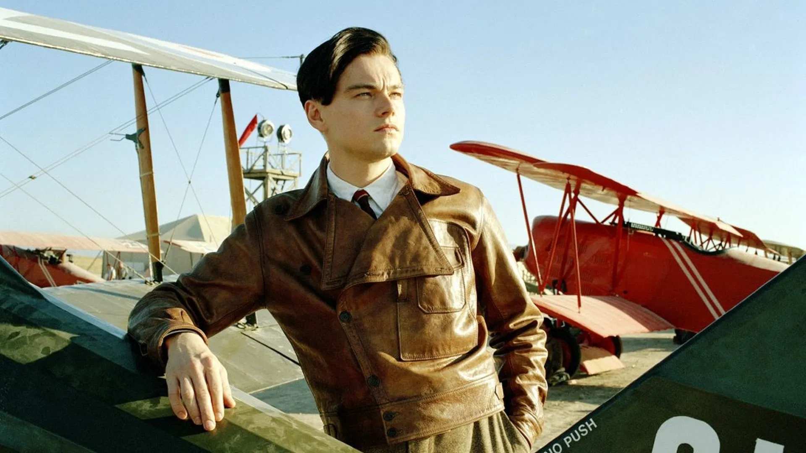
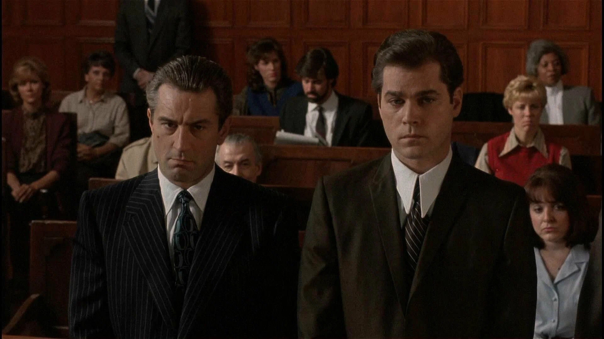
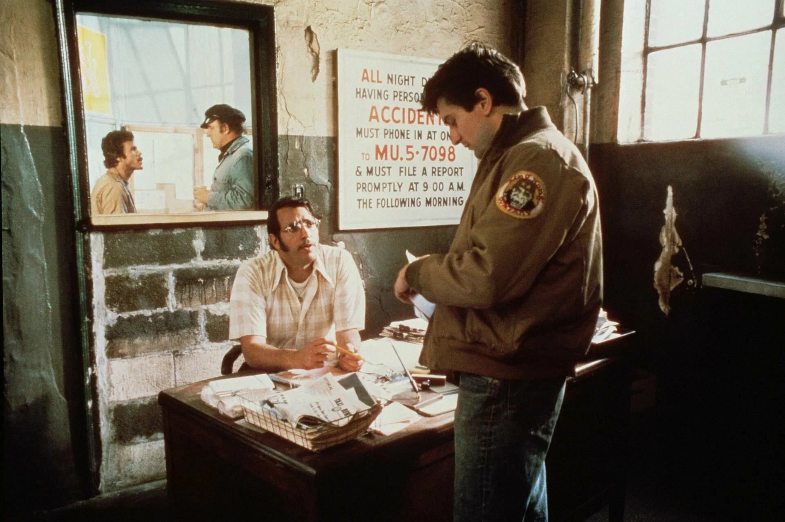
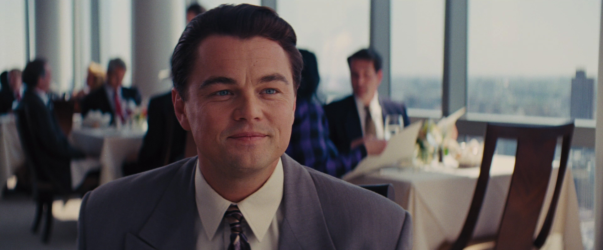
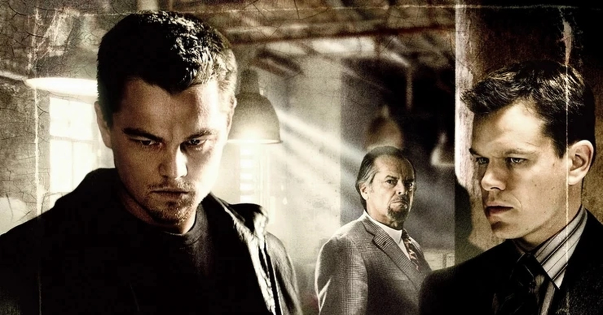
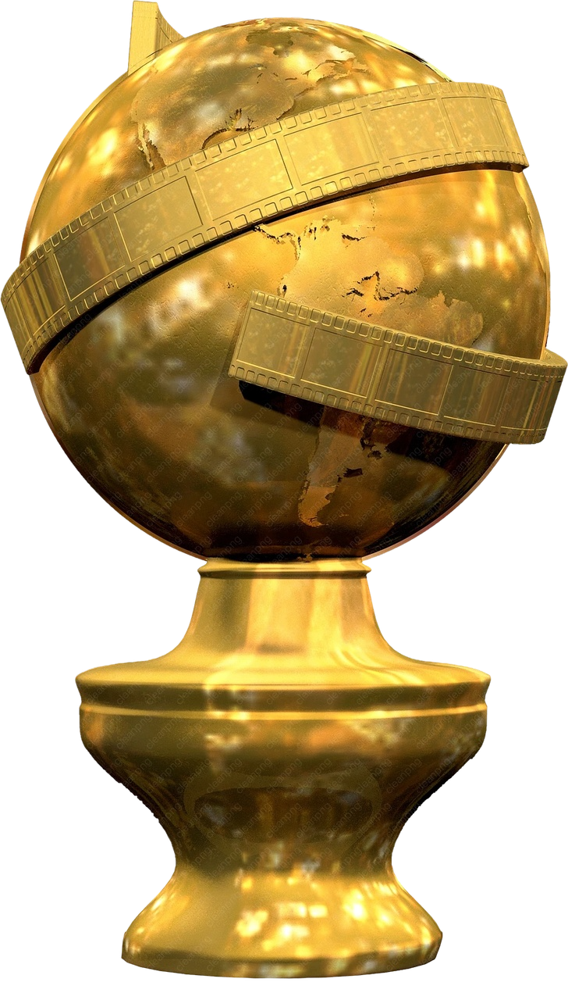
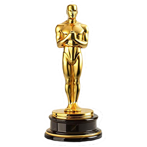
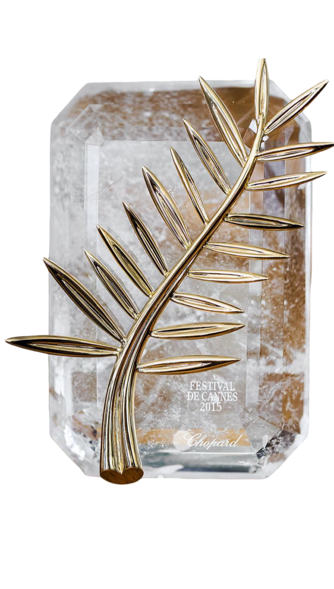

Мартин Скорсезе
17.11.1942
Нью-Йорк, США
Мартин Скорсезе родился в 1942 году в Нью-Йорке в семье итальянских иммигрантов, работавших в швейной промышленности.
Из-за астмы в детстве он почти не выходил из дома, вместо этого много смотрел кино — это и определило его судьбу.
Он дважды женат на актрисе Изабелле Росселлини (сейчас в браке с Хелен Моррис), у него трое детей.
Скорсезе — признанный классик гангстерского жанра и психологической драмы.
Его почерк: динамичный монтаж, частые «покадровые» рапиды, «сломанные» персонажи на грани нервного срыва,
постоянная тема вины и искупления, а также умопомрачительные саундтреки (обычно из старого рока, блюза и поп-музыки 50–70-х годов).
Любимые жанры: криминальная драма, триллер, биографическое кино, а также он часто снимает фильмы о киноиндустрии и религиозные эпосы.
Известные фильмы

Остров проклятых
2009 год

Авиатор
2004 год

Славные парни
1990 год

Таксист
1976 год

Волк с Уолл-стрит
2013 год

Отступники
2006 год
Награды

Премия «Золотой глобус»
4 победы
9 номинаций

Премия «Оскар»
1 победа
14 номинаций

Каннский кинофестиваль
3 победы
3 номинации